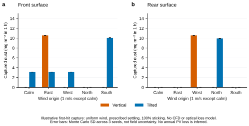

SUPPLEMENTARY METHOD · GPU PILOT
NVIDIA Warp로 추적한
수직형·경사형의 먼지 충돌
일정 풍속의 첫 충돌 입자 모델 · 현장 오염률과 발전 손실은 미검증
실행한 내용
논문 조감도와 동일한 1만㎡ 패널 기하에서 앞면·뒷면·지면에 처음 충돌한 입자와 영역을 통과한 입자를 구분했습니다. RTX 4080 Laptop GPU에서 NVIDIA Warp 1.17.0으로 50만 입자, 5개 바람 조건, 2개 배치, 3개 난수 시드를 실행했습니다. 총 30회·1,500만 입자입니다.
가정과 결과
100 × 100 × 4m 영역, 바람 1m/s(무풍 대조 포함), 침강속도 0.01m/s, 먼지 농도 100µg/m³와 1시간 노출을 가정했습니다. 유입 면적과 법선 속도에 비례해 입자를 배분했으며, 패널에 충돌하면 전량 붙는다고 가정했습니다. 이 값들은 현장 관측이 아닙니다.

이 결과의 해석 범위
바람은 일정하며 패널 주변 기류를 풀지 않습니다. 입자는 바람과 침강속도에 따라 직선으로 이동합니다. 난류·확산·입경 분포·공기역학적 회피·튕김·재비산·강우·세척이 없습니다. 완전부착은 충돌 입자에 대한 포획 상한 가정이지 실제 전체 침착량의 엄밀한 상한은 아닙니다.
무풍일 때 수직면의 포획량이 0인 것은 이 단순 궤적과 기하의 결과입니다. 현실의 수직 패널에 먼지가 쌓이지 않는다는 뜻이 아닙니다. 오염 질량과 광투과율의 보정 관계가 없어 본문 발전량을 감소시키거나 수직형의 경제적 이득을 산정하지 않았습니다.
검증과 다음 실험
모든 실행에서 유입 입자 수와 앞면·뒷면·지면·이탈 합계가 일치했습니다. 독립 NumPy 삼각형 교차 계산과 총 2,560개 광선의 GPU 결과도 일치했습니다. 이는 구현 검증이며 오염 물리의 실측 검증은 아닙니다.
다음 단계는 입경·풍속장·부착계수, 강우·세척 회복, 먼지 질량과 광투과율의 관계를 관측하고, 이를 전후면 일사와 연결하는 것입니다. 그 뒤 동일 부지의 연간 발전량과 유지관리비를 재평가할 수 있습니다.
사용 기능: NVIDIA의 Warp mesh_query_ray 공식 문서. 설치 환경과 실험 가정은 ZIP에 제공합니다.